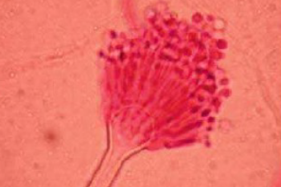
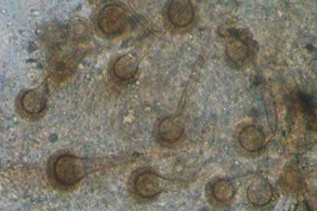
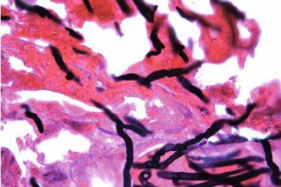
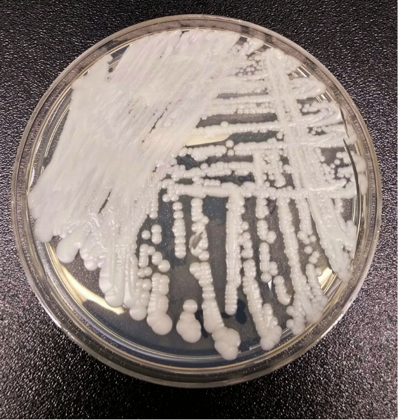
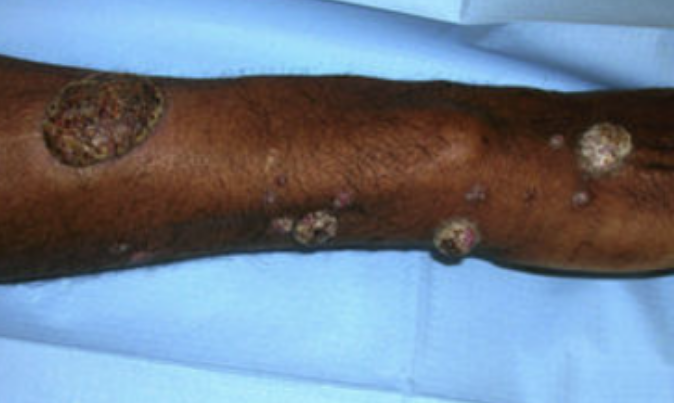
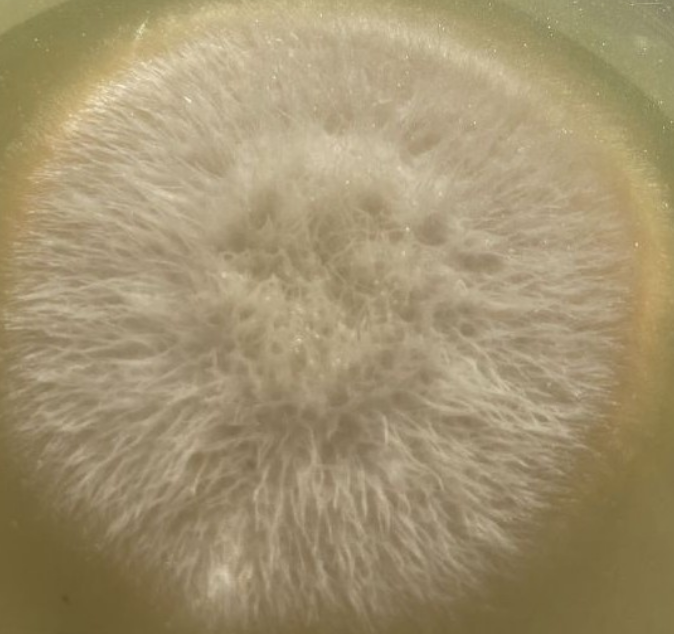
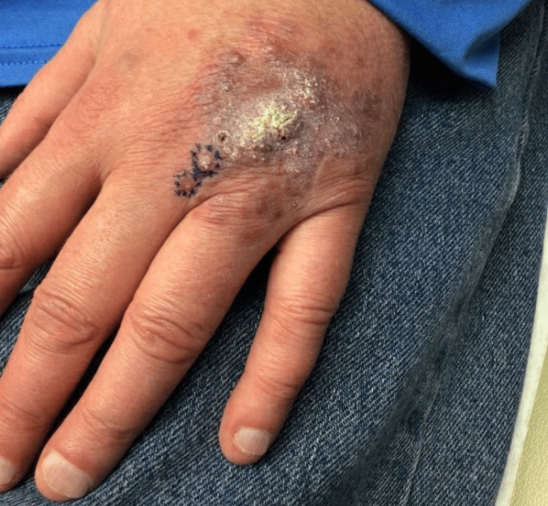
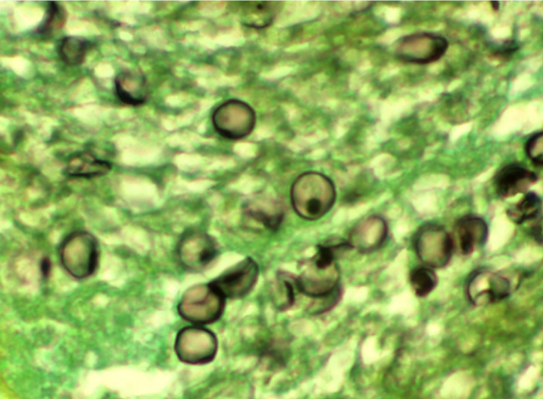

Aula 4
Micoses oportunistas
São micoses causadas por fungos termotolerantes de baixa virulência, de distribuição cosmopolita, que podem causar doença em hospedeiro com algum comprometimento imunológico ou alteração metabólica. A porta de entrada desses fungos é variável, e atualmente são muito comuns no Brasil e de grande importância médica. Você verá a seguir as principais micoses oportunistas de importância clínica no nosso país.
Aspergilose
Aspergilose é uma doença causada por fungos do gênero Aspergillus que acomete diferentes órgãos como pulmão, seios paranasais, pele, olhos e sistema nervoso central. Em pacientes imunossuprimidos ocorre doença invasiva com evolução clínica grave. A letalidade da aspergilose invasiva (AI) é elevada e varia de 31% a 36% em pacientes com leucemia. Em pacientes com covid-19 que desenvolveram AI a letalidade foi superior a 50%. Os agentes etiológicos envolvidos em infecções invasivas em seres humanos são membros do complexo Aspergillus fumigatus (o mais frequente), seguidos de A. flavus, A. niger e A. terreus. A. fumigatus é mais comum em infecções pulmonares, enquanto A. flavus causa infecção em seios paranasais. Já A. niger e A. terreus costumam colonizar ferimentos de grandes queimados.

Aspergillus terreus

Aspergillus fumigatus

Hifas em ângulo reto
Aspergillus são ubíquos na natureza, existem como sapróbios no solo, em vegetais e material úmido. São também encontrados no ar e em sistemas de água de hospitais, que são reservatórios para transmissão nosocomial do fungo.
A infecção por Aspergillus ocorre por via respiratória por meio da inalação de conídios presentes em suspensão no ar ambiente. Atingem os seios paranasais e, por serem muito pequenos, os conídios também conseguem atingir o trato respiratório inferior dos humanos, causando colonização e/ou infecção. A forma cutânea ocorre por inoculação direta a partir de lesões na pele (queimaduras) ou por disseminação hematogênica. A infecção do sistema nervoso central ocorre por disseminação hematogênica. A aerolização a partir da água ocorre durante o uso de duchas /chuveiros, favorece a inalação de conídios e pode promover infecção pulmonar em pacientes imunossuprimidos.
São observadas diversas formas clínicas, que variam desde colonização de via aéreas até formas invasivas pulmonares e acometimento de sistema nervoso central. A tabela a seguir apresenta as formas clínicas associadas às condições do hospedeiro.
Formas clínicas associadas às condições do hospedeiro
| Condição do hospedeiro | Forma clínica |
|---|---|
| Reatividade de vias aéreas, fibrose cística. | Aspergilose broncopulmonar alérgica. |
| Doença pulmonar estrutural. | Aspergiloma (bola fúngica). |
| Uso de corticoide inalatório, bronquiectasias, fibrose cística. | Colonização de vias aéreas. |
| Lesão, tissular, inoculação traumática, queimaduras. | Doença cutânea. |
| Lesão tissular, cirurgia, corpo estranho. | Doença ocular. |
| Transplante de pulmão, outras condições clínicas. | Traqueobronquite. |
| Doença pulmonar estrutural, câncer, uso de corticoide, desnutrição, clearance mucociliar prejudicado após infecção pulmonar, permanência em UTI. | Aspergilose pulmonar crônica. |
| Neutropenia, diabetes, abuso de álcool, imunossupressão prolongada, residência em região tropical. | Doença de seios paranasais. |
| Disseminação hematogênica a partir de focos primários (pulmonar, inoculação cutânea) ou contíguo aos seios paranasais. | Doença do sistema nervoso central. |
| Imunossupressão exógena (quimioterapia, transplantes), infecções respiratórias virais graves (influenza, covid 19). | Infecção invasiva. |
Os fatores predisponentes são muitos, como malignidade hematológica, neutropenia prolongada, transplante de células-tronco hematopoiéticas, transplante de órgãos sólidos, doença pulmonar grave, particularmente aqueles internados em unidade de terapia intensiva; pessoas em uso de corticoides e cirrose hepática. O uso de novos agentes imunoterapêuticos, como inibidores de tironsina-quinase (ibrutinib), análogos da purina (fludaranina), que causam defeitos quantitativos e qualitativos de células de T por 1 a 2 anos, tocilizumab associado a corticoide para o tratamento da síndrome de liberação de citocinas que ocorre em infecção grave por covid-19 e, finalmente, terapia com receptor de antígeno quimérico de células T (CAR-T), são fatores de risco para o desenvolvimento da forma invasiva.
Todos os indivíduos são suscetíveis à infecção por Aspergillus, porém o desenvolvimento da doença está associado a condições do hospedeiro, como descrito na tabela. A infecção não confere imunidade ao paciente.
Candidíase invasiva
Candidíase invasiva é definida como disseminação hematogênica de infecção por Candida albicans e não albicans para múltiplos órgãos, como olhos, rins, válvulas cardíacas, cérebro. A letalidade atribuída à candidemia e à infecção disseminada é de 30%.
Existem cerca de 160 espécies de Candida na natureza, entretanto apenas vinte delas causam infecção em humanos. Novos estudos taxonômicos reagruparam numerosas Candidas de importância médica em outros gêneros: Candida glabrata – Nakaseomyces glabratus, Candida guilliermondii – Meyerozyma guilliermondii, Candida lusitaniae – Clavispora lusitaniae; Candida krusei – Pichia kudriavzevii, e Candida rugosa – Diutina rugosa. Candida auris foi primeiramente descrita em 2009 e emergiu como um patógeno causador de infecções relacionadas a serviços de saúde. Possui a capacidade de colonizar a pele de pacientes e causar grandes surtos em hospitais porque pode permanecer no ambiente por semanas. Dez por cento dos pacientes colonizados por C. auris desenvolvem a doença e a letalidade pode variar entre 20% e 60%, dependendo da localização geográfica. É um patógeno multirresistente, na maioria dos casos com sensibilidade apenas às equinocandinas. A Candida é uma levedura considerada parte da microbiota normal do trato gastrointestinal (TGI) e geniturinário de seres humanos.

Candidozyma auris
A principal via de infecção é a endógena, ou seja, quando há uma ruptura da barreira cutânea (grande queimado, uso de cateteres intravasculares) ou do epitélio intestinal (cirurgia do intestino, mucosite após quimioterapia, perfuração gastrointestinal), que permitem a translocação da Candida para a corrente sanguínea e, posteriormente, disseminação hematogênica para outros órgãos. A via exógena de transmissão de Candida ocorre a partir do contato com superfícies do ambiente hospitalar, artigos médicos e mãos de profissionais de saúde contaminados pelo fungo. As manifestações clínicas incluem candidemia e candidíase sistêmica com acometimento de diversos órgãos como baço, fígado, rins, olhos, coração, cérebro, pulmão, ossos e cavidade intra-abdominal. Pode se manifestar também como acometimento de um único órgão (ex.: esofagite).
A candidíase invasiva está associada a diversos fatores de risco, incluindo internação em Unidade de Terapia Intensiva (UTI), uso de antimicrobianos de amplo espectro, presença de cateter venoso central e nutrição parenteral total. Pacientes com idade avançada ou neonatos prematuros, aqueles com neutropenia prolongada ou portadores de comorbidades como diabetes mellitus, doença renal crônica em terapia de substituição (hemodiálise), doença hepática, neoplasias hematológicas, assim como receptores de transplantes de órgãos sólidos ou de células hematopoiéticas, apresentam maior risco. O tratamento com medicamentos imunossupressores, incluindo quimioterapia ou corticoterapia em doses elevadas, também constitui um fator predisponente importante para o desenvolvimento da doença.
A Candida coloniza naturalmente o trato gastrointestinal (TGI) de seres humanos, de modo que, na presença das condições predisponentes previamente descritas, qualquer indivíduo pode desenvolver candidíase invasiva. Além disso, a infecção não confere imunidade ao hospedeiro.
Feohifomicoses
Feohifomicoses são infecções superficiais e profundas causadas por fungos que contêm melanina em sua parede celular (fungos demáceos). Previamente, eram considerados agentes raros de infecção. Entretanto, com o incremento do tratamento de neoplasias e doenças imunomediadas com terapias altamente imunossupressoras, o aumento do número de transplantes de órgãos sólidos e de células-tronco hematopoiéticas, atualmente são clinicamente relevantes, afetando populações vulneráveis com comprometimento da imunidade ou aqueles com intensa exposição ambiental associados a fatores socioeconômicos. Existem mais de 150 espécies de agentes etiológicos e 70 gêneros têm sido identificados. Pelo menos 18 gêneros causam doenças em seres humanos conforme a tabela a seguir, sendo Bipolaris, Cladophialophora, Exophiala e Alternaria os gêneros mais comumente implicados.
Agentes etiológicos das feohifomicoses
| Alternaria | Fonsecaea spp. |
| Acrophialophora spp. | Hortaea werneckii |
| Aureobasidium | Neoscylalidium dimidiatum |
| Bipolaris | Verruconis |
| Chaetomium | Phaeoacremonium |
| Cladophialophora spp. | Phoma |
| Curvularia spp. | Medicopis e Nigrograna |
| Exophiala spp. | Rhinocladiella spp. |
| Exserohilum | Veronaea |
Esses são fungos comumente encontrados no ambiente em solos ricos em nutrientes e com vegetação em decomposição. Apesar de sua presença ambiental ubíqua, raramente causam doença. Pequenos traumas algumas vezes imperceptíveis são a porta de entrada; a exposição ocupacional pode favorecer o contato e a inoculação do fungo (peixeiros, agricultores, mineradores, trabalhadores da construção, fazendeiros) Há também a descrição de surtos de infecções associadas a serviços de saúde relacionados a produtos médicos contaminados.
As formas clínicas que acometem pacientes imunocompetentes são as formas cutâneas e subcutâneas localizadas, sistema nervoso central como abscesso cerebral, sinusite alérgica fúngica, ceratite. Em pacientes imunossuprimidos e transplantados as infecções disseminadas, pulmonares e do sistema nervoso central são as mais encontradas.

Lesões cutâneas características de feohifomicose, manifestadas por múltiplos nódulos e placas verrucosas, algumas com ulceração central e crostas, distribuídas ao longo do membro superior, compatíveis com infecção por fungos demáceos
Veja na tabela a seguir os agentes etiológicos e formas clínicas por eles causadas.
| Agente etiológico | Manifestações clínicas |
|---|---|
| Alternaria, Exophiala, Bipolaris, Phialophora. | Infecções locais superficiais e profundas, oculomicose, rinosinusite, onicomicose. |
| Curvularia, Bipolaris, Exserohilum, Lasidioplosia. | Ceratite. |
| Bipolaris e Curvularia. | Sinusite alérgica fúngica. Micose broncopulmonar alérgica. |
| Cladophialophora bantiana e Rhinocladiella mackenziei (Ramichloridium mackenziei). E dermatitidis (fWangiella dermatitidis), V. gallopava (O gallopava), F pedrosoi, e Bipolaris spicifera. | Infecção do Sistema Nervoso Central (abscesso cerebral). |
| Exophiala, Chaetomium, Verruconis. | Pneumonia. |
| Lomentospora prolificans, Bipolaris spicifera, Exophiala dermatitidis. | Infecções disseminadas. |
Nas feohifomicoses, o principal fator predisponente identificado é o trauma. A exposição ocupacional e condições climáticas também têm seu papel, com maior número de casos em regiões tropicais e subtropicais.
Nas feohifomicoses, a suscetibilidade está fortemente relacionada às condições clínicas que reduzem a resposta imune do hospedeiro. Elas aumentam a susceptibilidade a doença invasiva e incluem o uso de imunossupressores, neoplasias, transplantes, portadores de diabete mellitus. O uso de corticosteroides e desnutrição também são fatores de risco para o desenvolvimento da doença. Algumas mutações inatas ou adquiridas, como as que afetam a via de Interleucina-17 (IL-17), aumentam o risco de infecções fúngicas, como a feohifomicose. A infecção não confere imunidade.
Fusariose
A fusariose é uma doença infecciosa causada por fungos do gênero Fusarium. Fungos desse gênero podem causar doenças em plantas, animais e seres humanos, sendo, neste último hospedeiro, as formas mais comuns a onicomicose e a ceratite. Em indivíduos imunossuprimidos, a doença pode variar desde infecções superficiais (onicomicose) até formas disseminadas com fungemia, múltiplas lesões cutâneas e pneumonia.
As espécies de Fusarium são agrupadas em mais de vinte complexos filogenéticos, sete dos quais são relatados como causa de doença em seres humanos; complexo Fusarium solani, complexo Fusarium oxysporum, complexo Fusarium fujikuroi, complexo Fusarium incarnatum-equiseti, complexo Fusarium chlamidosporum, complexo Fusarium dimerum e complexo Fusarium sporotrichoides. As espécies de maior relevância clínica são Complexo Fusarium solani, que predomina no Brasil, e o complexo Fusarium oxysporum, responsáveis, respectivamente, por 50% e 20% das infecções graves.

Fusarium spp em cultivo. Aspecto macroscópico
Esses são fungos ubíquos na natureza, amplamente distribuídos no solo, em partes subterrâneas e aéreas de plantas, na água e outras matérias orgânicas e a principal via de infecção é a inalação de microconídios por via aérea ou a inoculação direta por meio de lesões traumáticas, incluindo queimaduras. Há relatos de surtos nosocomiais por Fusarium spp., quando o fungo pode estar presente no sistema de água e ocorrer a aerolização de conídios durante o uso de chuveiros e torneiras. Outra fonte de transmissão em ambiente hospitalar é por via intravenosa a partir da superfície de frascos de medicamentos não corretamente desinfetados durante o preparo da medicação, ou durante a inserção de cateter venoso central. A presença de onicomicose e lesões intertrigo também são portas de entrada que podem levar a infecção disseminada em pacientes imunossuprimidos. A contaminação ocular pode ocorrer após lesão traumática com plantas ou solo contaminados por Fusarium, ou por contaminação de soluções oftalmológicas utilizadas em lentes de contato.
O espectro clínico da fusariose é amplo e depende da porta de entrada e do status imunológico do hospedeiro. Pacientes imunocompetentes apresentam mais frequentemente a forma localizada enquanto em imunossuprimidos predomina a forma disseminada. Veja a comparação na tabela a seguir.
Apresentação clínica de fusariose de acordo com o status imunológico do paciente
| Imunocompetentes | Imunossuprimidos |
|---|---|
|
Formas predominantes: onicomicose, ceratite. Outras formas de apresentação: Infecção de pele e partes moles. Osteomielite. Artrite. Endoftalmite. Peritonite. Eumicetoma. Sinusite. Pneumonia. Fungemia. Doença disseminada. |
Formas predominantes: doença disseminada, pneumonia, fungemia, celulite ou linfangite. Outras formas de apresentação: Sinusite. Abscesso cerebral. Endocardite. Osteomielite. Artrite. Endoftalmite. |
No Brasil, a fusariose invasiva é a segunda causa mais comum de infecção fúngica invasiva entre pacientes com leucemia mieloide aguda e a causa mais comum entre aqueles receptores de transplante de células tronco hematopoiéticas. Em pacientes com neoplasias hematológicas, a ocorrência de neutropenia prolongada (< 100 cél/mm3), assim como a presença de onicomicose e /ou lesão intertrigo por Fusarium, são fatores de risco associados ao desenvolvimento de fusariose invasiva.
Na fusariose, a suscetibilidade está diretamente relacionada a condições de imunossupressão, sendo mais evidente em pacientes portadores de leucemia mieloide aguda e em receptores de transplante de células-tronco hematopoiéticas. Nesses casos, a presença de onicomicose ou de lesões de intertrigo atua como porta de entrada para o desenvolvimento da forma invasiva da doença. Assim como em outras micoses oportunistas, a infecção não confere imunidade.
Mucormicose
As Mucormicoses são infecções angioinvasivas causadas por fungos da ordem Mucorales, que apresentam elevada morbidade e letalidade (40%-80%). Pessoas com diabetes e imunossuprimidos são os mais susceptíveis a desenvolver a doença. A Ordem Mucorales é composta por pelo menos 55 gêneros e mais de 260 espécies, sendo que os gêneros que mais causam infecção em humanos são Rhizopus, Mucor e Lichtheimia. Outros agentes de mucormicose incluem Rhizomucor, Cunninghamella, Apophysomyces, Saksenaea, Syncephalastrum, Cokeromyces e Actinomucor. Os agentes de mucormicose variam dependendo da região geográfica.
Fungos da Ordem Mucorales estão presentes em resíduos orgânicos em decomposição, sendo encontrados em alimentos, no solo e no ar. Os esporos desse fungo entram no organismo humano por via inalatória, ingestão ou inoculação direta. Lesões traumáticas que ocorram durante desastres naturais, combates e por queimadura, também são vias de infecção do fungo. Há, ainda, a possibilidade de transmissão nosocomial por contaminação de cateteres intravasculares, curativos e bolsa de colostomia.
As formas clínicas são rino-órbito-cerebral, pulmonar, gastrointestinal, cutânea. Veja na tabela a seguir como as formas clínicas se apresentam de acordo com a condição clínica do hospedeiro.
Formas clínicas e condições do hospedeiro.
| Condição do Hospedeiro | Forma Clínica |
|---|---|
| Neutropênicos, receptores de transplante de órgãos sólidos e de células tronco hematopoiéticas, covid-19. | Pulmonar. |
| Diabetes mellitus, covid-19. | Rino-órbito-cerebral. |
| Prematuridade. | Gastrointestinal. |
| Pacientes imunocompetentes com | Cutânea. |
Na mucormicose, as condições predisponentes incluem lesões cutâneas traumáticas após desastres naturais ou queimaduras, além de imunossupressão e de diabetes mellitus. Os indivíduos suscetíveis são portadores de diabetes mellitus, com ou sem cetoacidose; neoplasias hematológicas em tratamento com quimioterapia, transplante de órgãos sólidos e de células tronco hematopoiéticas, neutropenia prolongada, uso de corticosteroides, traumas, sobrecarga de ferro, uso de drogas ilícitas intravenosas, prematuridade, desnutrição e, mais recentemente, pacientes com covid-19. A infecção não confere imunidade.
Outras hialohifomicoses (não fusariose)
As micoses denominadas hialohifomicoses são raras, causadas por um grupo heterogêneo de fungos filamentosos definidos pela presença de hifas hialinas septadas em tecidos. Os agentes etiológicos de maior importância clínica são Scedosporium spp., Acremonium spp., Scopulariopsis spp., Purpureocillium e Paecilomyces spp. Recentemente, novos estudos taxonômicos reagruparam numerosas espécies de Acremonium de importância médica em outros gêneros. Veja na tabela a seguir as espécies mais comumente associadas às hialohifomicoses.
| Scedosporium boydii, Scedosporium apiospermum. |
| Acremonium alabamense, Sarocladium kiliense, Gliomastix roseogrisea, Sarocladium strictum, Acremonium potronii, Xenoacremonium recifei. |
| Paecilomyces variotii. |
| Purpureocillium lilacinum. |
| Scopulariopsis brevicaulis. |
Esses são fungos ubíquos no ambiente, encontrados no solo. Scedosporium também está presente em água poluída e em esgoto. A infecção pode surgir após traumas penetrantes, via inalatória, uso de drogas ilícitas intravenosas, após catástrofes ambientais, como tsunamis, e após afogamento. A transmissão após procedimentos médico-hospitalares também é descrita como a infecção de fistulas para hemodiálise, meningite após anestesia raquidiana, endocardite de válvula protética e contaminação do sistema de ventilação de sala cirúrgica.
As manifestações clínicas vão desde colonização e infecções crônicas localizadas até infecções agudas e/ou disseminadas. Em pacientes imunocompetentes as manifestações clínicas incluem ceratite, endoftalmite, otite, sinusite, infecção do sistema nervoso central, infecção de partes moles, osteoarticulares e pneumonia após afogamento.

Lesão cutânea localizada no dorso da mão, caracterizada por placa infiltrada com áreas ulceradas e crostas, associada a processo inflamatório local, compatível com infecção cutânea por Scedosporium spp
Scedosporium tem neurotropismo e por isso abscesso cerebral pode ocorrer sem evidência de disseminação ou, então, a partir de pneumonia após afogamento. Em imunossuprimidos a disseminação hematogênica pode ocorrer com ou sem fungemia, sinusite, pneumonia, infecção de partes moles e sistema nervoso central.
As condições predisponentes incluem vítimas de acidentes naturais que apresentam lesões traumáticas, pessoas que sofrem afogamento em água poluída e indivíduos expostos a artigos médicos contaminados.
Pacientes fortemente imunossuprimidos são mais vulneráveis — como receptores de transplantes de órgãos sólidos, receptores de células tronco hematopoiéticas e em tratamento de doenças hematológicas —, podendo contrair infecção por fungos do ambiente e desenvolverem infecções graves. Em pacientes imunocompetentes as infecções podem ocorrer após traumas cutâneos ou de mucosa, ou após afogamento. Pacientes portadores de fibrose cística podem permanecer colonizados ou, então, desenvolver infecção pulmonar. A infecção não confere imunidade.
Pneumocistose
Pneumocistose é uma infecção causada pelo fungo oportunista Pneumocystis jirovecii. Foi primeiramente descrita na época de Segunda Guerra Mundial como pneumonia intersticial e acometia principalmente crianças prematuras ou desnutridas. A forma clínica é de pneumonia grave, que acomete pessoas vivendo com HIV/AIDS (PVHA) e pacientes não HIV, porém portadores de outras imunodeficiências. Após a introdução de profilaxia e de terapia antirretroviral a incidência de pneumonia caiu de forma significativa, no entanto tem aumentado em pacientes imunossuprimidos não HIV.
O P. jirovecii é um fungo oportunista que infecta seres humanos. Outras espécies pertencentes ao gênero infectam camundongos, ratos e coelhos tais como P. murina, P. wakefieldiae, P. carinii e P. oryctolagi.

Corte histopatológico evidenciando numerosas estruturas fúngicas arredondadas, compatíveis Pneumocystis jirovecci distribuídas no tecido, algumas apresentando halo claro ao redor, observadas em coloração especial para fungos (ex.: Grocott-Gomori)
O reservatório ambiental inclui água e solo. P. jirovecii pode colonizar o pulmão de humanos sem causar pneumonia. Esses indivíduos, colonizados e assintomáticos, podem atuar como reservatório e contribuir para a transmissão.
A transmissão permanece não esclarecida. Há evidências de que a primoinfecção ocorre na infância e posteriormente ocorre a reativação, todavia há possibilidade de reinfecção. A porta de entrada e de saída é a via respiratória. Há literatura mais recente que avalia o potencial de transmissão pessoa a pessoa (de um paciente infectado para outro susceptível) por contato direto e por gotículas, além da existência de um possível reservatório ambiental.
A pneumonia é a forma clínica que prevalece. Em PVHA os sintomas são moderados a graves, enquanto em pacientes HIV negativos a doença tem uma forma rapidamente progressiva. O padrão é de pneumonia intersticial bilateral, com infiltrado reticular ou em vidro fosco. A síndrome de angústia respiratória aguda grave ocorre nas formas mais graves e requer suporte ventilatório. Manifestações extrapulmonares são raras, a maioria dos casos foram descritos em pacientes com aids avançada e que não estavam em uso de profilaxia com sulfametoxazol-trimetoprim.
Os seres humanos entram em contato com o P. jirovecii no ambiente e podem se tornar colonizados. O desenvolvimento da doença dependerá de condições clínicas que levem a imunossupressão. Múltiplos fatores de risco são conhecidos por aumentar o risco de infecção por P. jirovecii, tais como PVHA que tenham contagem de células T-CD4+ <200 cél /μL ou percentual <14%, carga viral elevada, pneumonia bacteriana recorrente ou relato prévio de pneumonia por P. jirovecii. Pacientes receptores de transplante de órgãos sólidos, transplante de células tronco hematopoiéticas, neoplasias hematológicas, doenças reumatológicas (poliarterite nodosa, granulomatose com poliangeite, dermatomiosite/polimiosite, colite ulcerativa, doenças pulmonares intersticiais reumatoides) e uso de medicamentos imunossupressores. A infecção não confere imunidade.
Tricosporonose
A tricosporonose é uma doença invasiva causada pelo fungo basidiomiceto Trichosporon spp., que acomete pacientes principalmente imunossuprimidos, com letalidade elevada de 50-80%. A taxonomia de Trichosporon spp., agente etiológico da tricosporonose, é complicada porque essa designação se refere a um grupo de organismos heterogêneos. Múltiplas espécies do gênero são coletivamente referidas como Trichosporon beigelli. Com o uso de novas técnicas moleculares alguns micologistas propuseram uma reorganização do gênero, incluindo a criação de dois novos gêneros de relevância médica (Apiotrichum e Cutaneotrichosporon), que juntos compreendem aproximadamente 50 espécies, das quais pelo menos 16 são patógenos humanos. As principais espécies associadas com infecções em humanos são Trichosporon asahii, Trichosporon asteroides, Cutaneotrichosporon cutaneum, Trichosporon inkin, Cutaneotrichosporon mucoides, Apiotrichum montevideense e Cutaneotrichosporon ovoides.
Esses fungos estão amplamente presentes no ambiente como solo, água, madeira em decomposição. Fazem parte também da microbiota de seres humanos e colonizam a pele, trato respiratório e trato gastrointestinal. A maioria são sapróbios, mas algumas espécies patogênicas têm o potencial de causar infecções superficiais e infecções invasivas. A transmissão de Trichosporon ocorre geralmente a partir de exposição ao ambiente, por inalação de aerossóis com partículas de fungos, por contato direto com materiais ou dispositivos médicos contaminados (fonte exógena). Outra fonte importante de transmissão é a partir da translocação através do intestino de pacientes imunossuprimidos (fonte endógena).
Na tabela a seguir é possível identificar as formas clínicas e seu agente etiológico relacionado. A forma superficial ocorre em pacientes imunocompetentes residentes em regiões de clima tropical. A piedra branca são nódulos benignos irregulares no fio de cabelo. Pode acometer couro cabeludo, barba, sobrancelhas, bigode, axilas e pelos pubianos. Outra forma de apresentação de infecção superficial é a onicomicose.
Na forma invasiva ocorre a disseminação hematogênica para diversos órgãos. A manifestação clínica pode ser um abscesso cerebral, meningite, endoftalmite, pneumonia, infecção de partes moles, linfadenopatia, endocardite, artrite, esofagite, abscesso hepático, abscesso esplênico ou até mesmo infecção uterina.
Formas clínicas associadas aos agentes etiológicos
| Forma Clínica | Agente Etiológico | Infecções |
|---|---|---|
| Superficial | T. inkin e C. ovoides. | Piedra branca (cabelos e pelos pubianos). |
| T. asteroides e C. cutaneum. | Lesões superficiais de pele. | |
| Invasiva | T. asahii (mais comum), C. mucoides, C. ovoides. | Infecções sistêmicas. |
Por ser um fungo sapróbio e fazer parte da microbiota intestinal dos seres humanos, o estado de imunossupressão por diversas causas predispõem a infecção invasiva. A forma invasiva ocorre em pacientes imunossuprimidos, principalmente aqueles com neoplasia hematológica que estejam neutropênicos. Outras condições clínicas predisponentes são uso de cateteres intravasculares, pacientes com aids, grande queimado, uso de corticosteroides e cirurgia de troca valvar cardíaca. Pacientes em uso de antifúngicos sem atividade para o Trichosporon (Anfotericina B, equinocandinas) podem ter um escape e desenvolver tricosporonose.